1The data: a seismic section, and the faults an expert draws on it
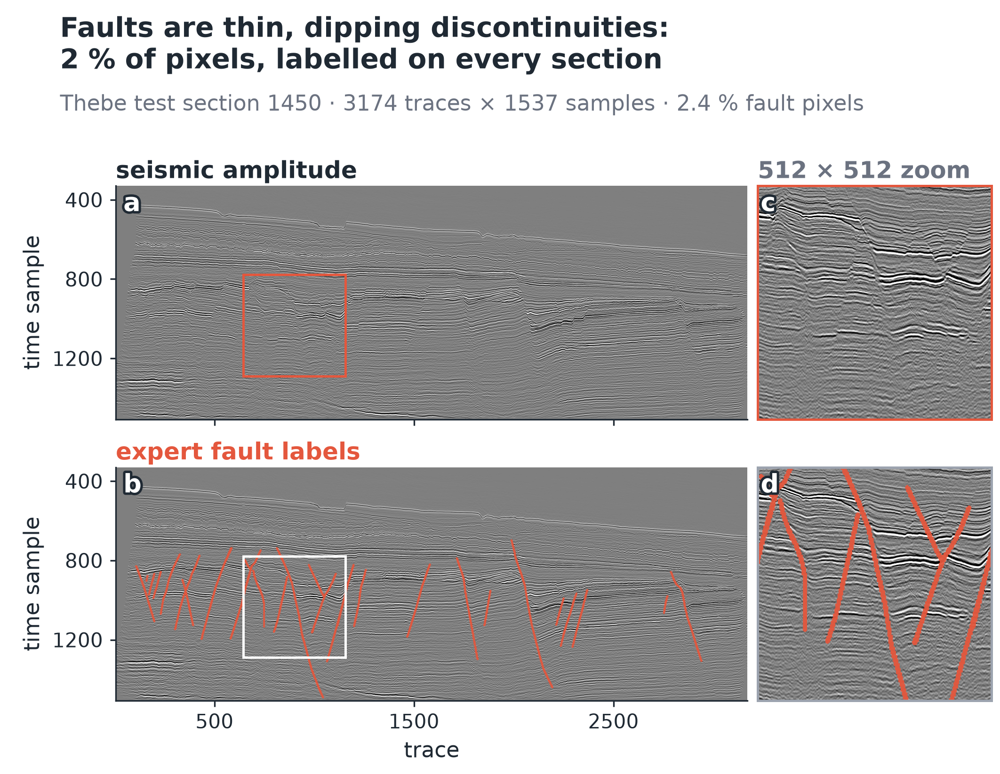
Why it is hard. Faults are thin, tilted breaks that occupy a tiny fraction of the image; an interpreter still picks them by hand, section by section. Labelling is the expensive step, so the question of this study is how far unlabelled data can replace labels.
2One survey, cut into slabs that never mix
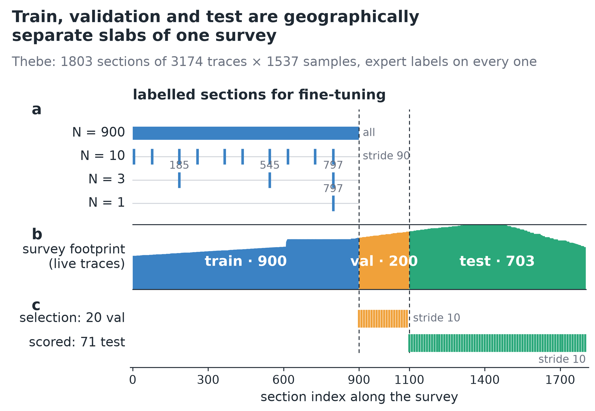
3The recipe: foundation model → seismic pre-training → 3-D head
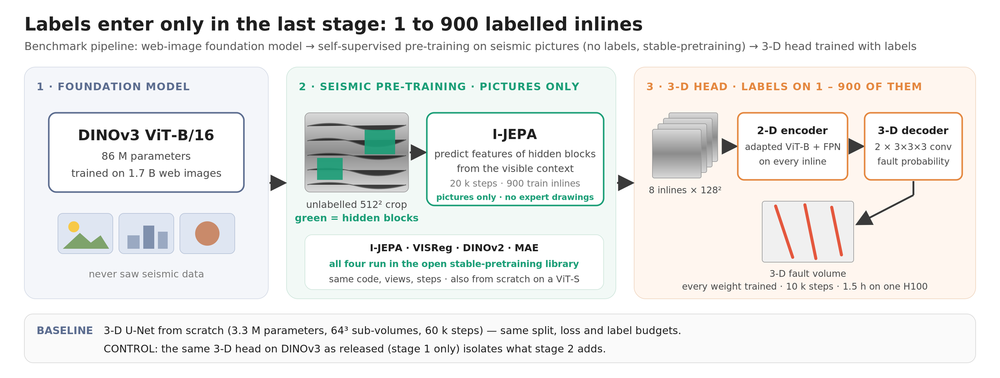
4Watching pre-training: one recipe quietly breaks the encoder
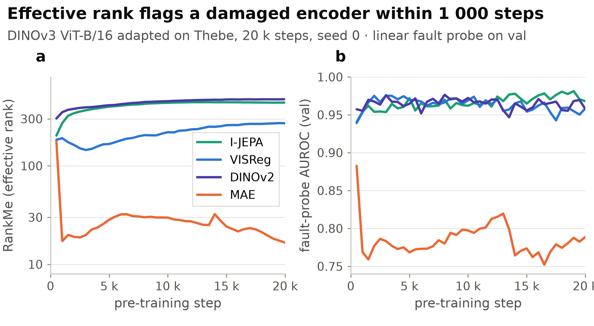
What it means. Reconstructing pixels (MAE) forces the encoder to represent local amplitude texture, exactly what DINOv3's semantic features had abstracted away, so the features degenerate. Effective rank is free to compute: log it in every run and stop a collapsing one before spending GPU hours on fine-tuning. It is a gate against collapse, not a ranking tool (it places VISReg too low).
5Which recipe adapts DINOv3 best
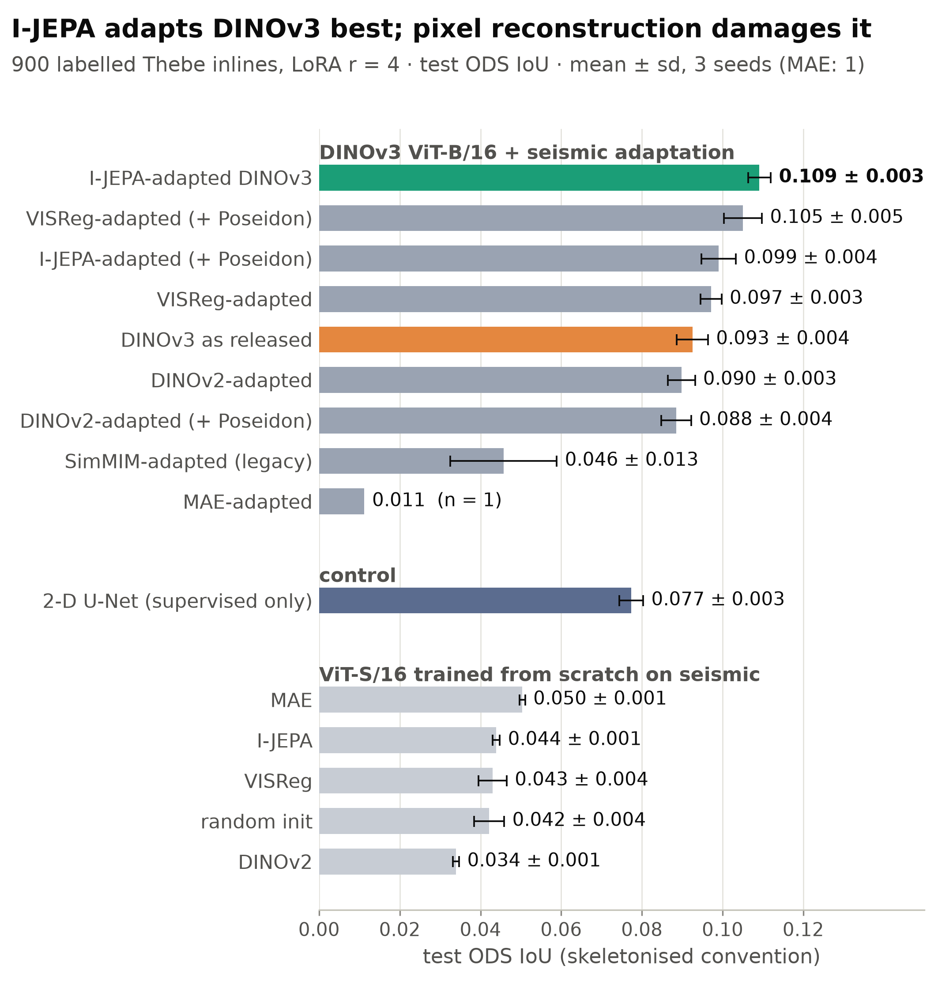
Answer. Latent prediction (I-JEPA) adapts the foundation model best. Pixel reconstruction, the recipe most published seismic foundation models start from, makes a DINOv3 start worse than no adaptation at all.
6What the adapted encoder sees
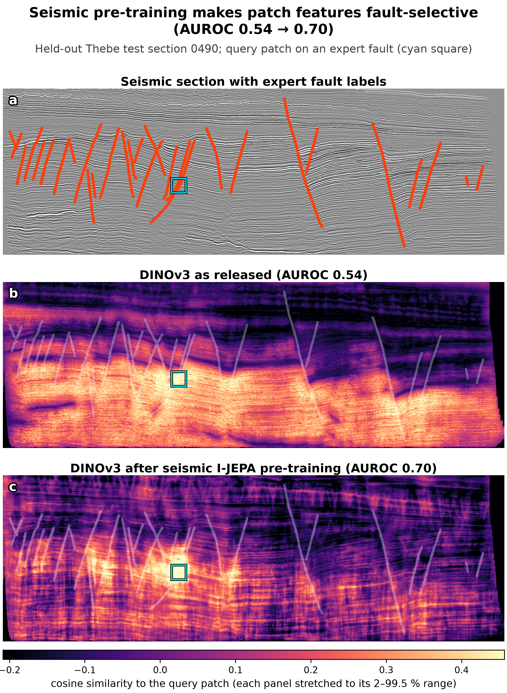
What it means. Pre-training moves the encoder toward separating faults from stratigraphy before any label is seen. Neither encoder is a fault detector on its own; this is the prior the 3-D head builds on, and it matters most exactly when labels are too few to teach it.
7A second survey is not a free win
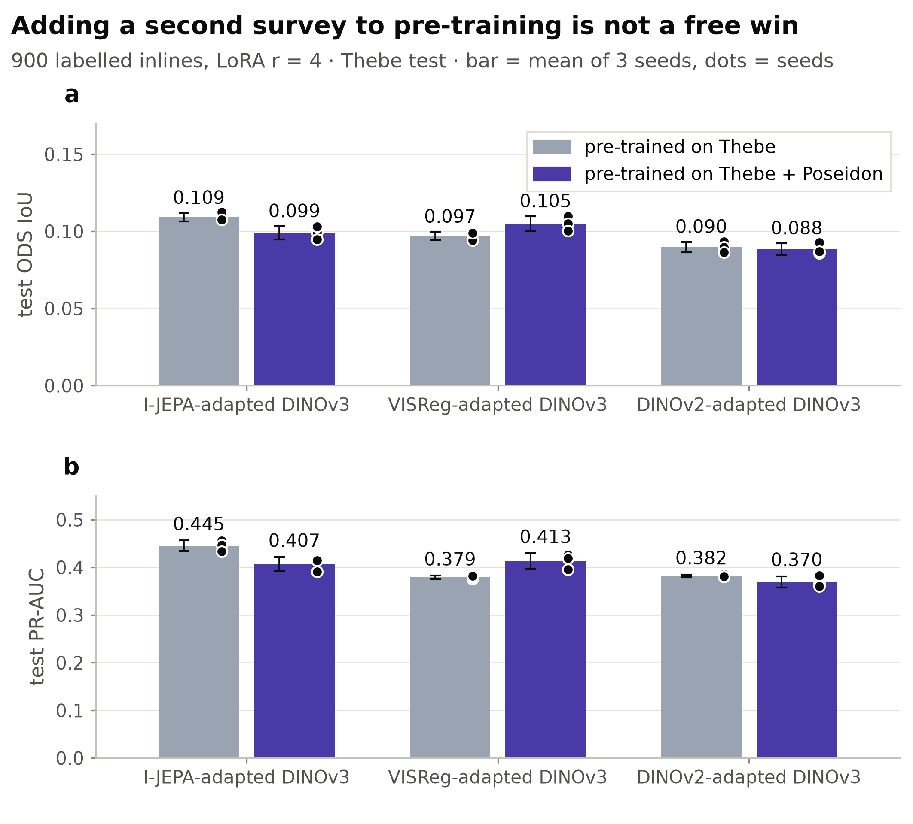
Why it matters. "More surveys" is the default assumption behind industrial foundation models. Here acquisition and gain differences changed what the encoder learned, so each corpus addition needs its own validation on the target survey.
8The payoff: how many labelled sections a 3-D fault model needs
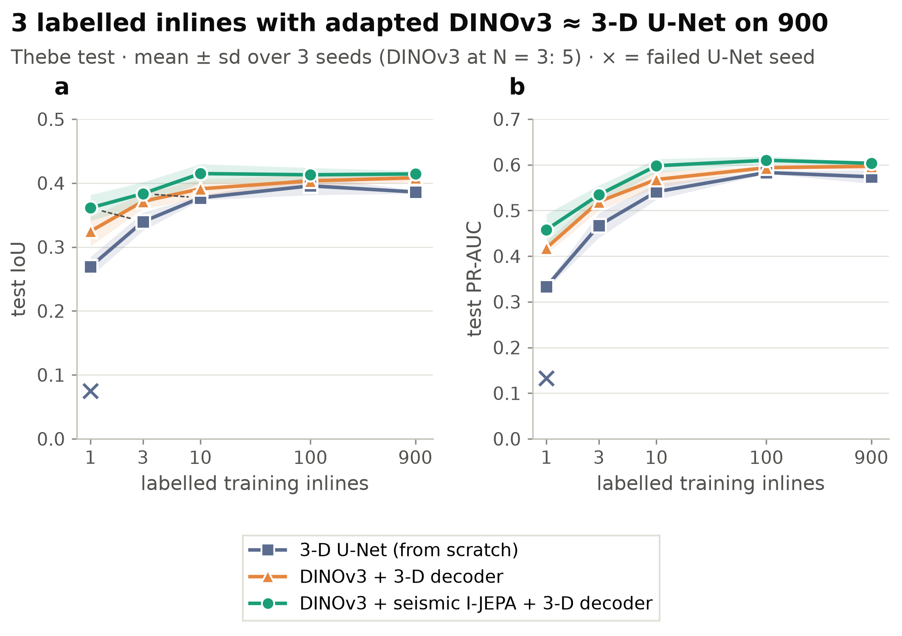
| labelled sections | 3-D U-Net (from scratch) | DINOv3 + 3-D decoder | DINOv3 + seismic I-JEPA + 3-D decoder |
|---|---|---|---|
| 1 | 0.27 ± 0.02 † | 0.33 ± 0.02 | 0.36 ± 0.02 |
| 3 | 0.34 ± 0.01 | 0.37 ± 0.01 ‡ | 0.38 ± 0.02 ‡ |
| 10 | 0.38 ± 0.00 | 0.39 ± 0.02 | 0.42 ± 0.02 |
| 100 | 0.40 ± 0.01 | 0.40 ± 0.01 | 0.41 ± 0.01 |
| 900 (all) | 0.39 ± 0.00 | 0.41 ± 0.01 | 0.41 ± 0.01 |
Test IoU against the raw expert mask at probability 0.5. † two seeds; the third U-Net run with one labelled section collapsed (IoU 0.075). ‡ five seeds. Dice, PR-AUC and per-seed values in tables/. Absolute IoU near 0.4 is normal for faults drawn as thin lines; never compare it with numbers from other papers, which use other conventions and splits.
Answer. Three labelled sections with the pre-trained foundation model reach the accuracy of a 3-D U-Net trained on 100 or on all 900 (0.38 vs 0.40 and 0.39); one labelled section gives a usable volume (0.36) that the U-Net only reaches with three. The foundation model wins in 14 of 15 seed pairs (the fifteenth, at 100 labels, is a tie at 0.409), and trains in 1.5 h on one H100 against 4 to 10 h for the U-Net (at 30× the parameters, so the U-Net stays cheaper to run).
9What seismic pre-training itself adds, seed by seed
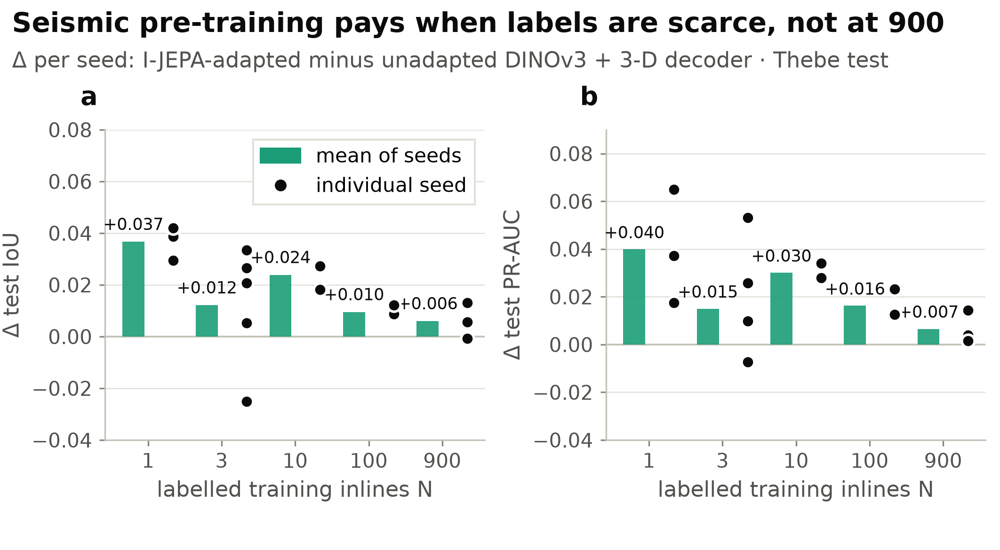
Answer. Real when labels are scarce: +0.037 IoU with one labelled section, +0.024 with ten and +0.010 with 100, positive in every seed. With three it is smaller and depends on which sections are labelled (+0.012, four of five seeds); with 900 labels it is within seed noise (+0.006, two of three seeds). Seismic pre-training pays where labels cannot do the job. It does not replace them when they are plentiful.
10What it looks like: one test section, 1 / 3 / 10 / 100 / 900 labels
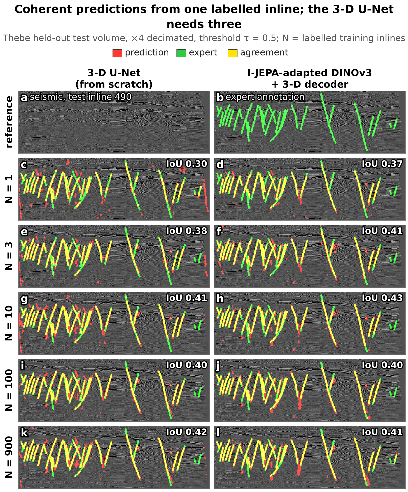
Read it as a plateau, not a curve. The pre-trained model gains from 1 to 3 to 10 labelled sections and nothing after that (whole test set: 0.36 → 0.38 → 0.42 → 0.41 → 0.41 at 1 / 3 / 10 / 100 / 900). On this one section even 3 and 900 look alike. The U-Net improves up to 100 (0.27 → 0.34 → 0.38 → 0.40) and is flat from there (0.39 at 900), so it meets the pre-trained model at 3 somewhere between 10 and 100 labelled sections. Both plateaus start between 10 and 100; that interval itself was not sampled.
11In 3-D: fault surfaces from one to three labelled sections are continuous
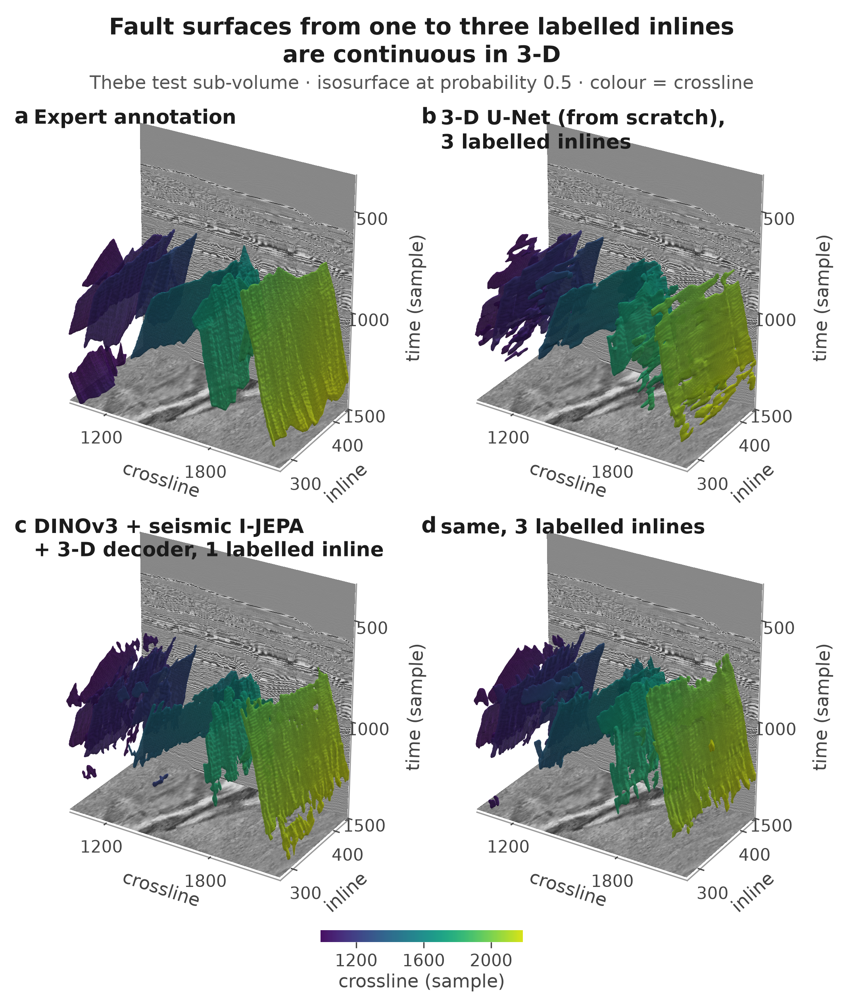
Where it fails. The worst test sections sit at the edge of the volume, where the 3-D decoder has one-sided context, and the errors are over-predictions in low-amplitude intervals rather than missed faults. With 900 labels most of them disappear: a label-scarcity effect, not a limit of the encoder.
12Five findings on one page
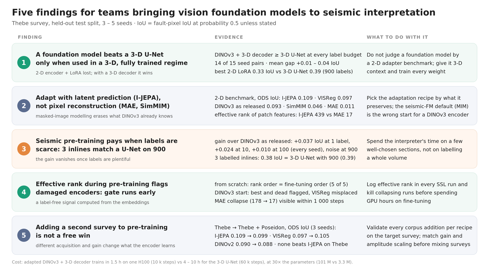
Limits, stated once
- One test survey. The 71 evaluated sections come from Thebe alone, so paired statistics between models are optimistic and the conclusions may not transfer to another basin.
- Baseline as published, not re-tuned. The 3-D U-Net runs in the reference paper's regime at every label budget; one of its three runs with one labelled section collapsed.
- Not a seismic foundation model. A public web-image model was adapted; no weights are released here, and none of the four recipes is new.
- Cost. The foundation model wins on labels and training time, not on inference FLOPs (one ViT-B pass per section of every sub-volume).
How it was built
- The four pre-training recipes are forward functions of the open stable-pretraining library (rbalestr-lab), used unchanged and kept diff-free against upstream. The seismic package around it adds the data readers, view pipelines, the 3-D head, the 3-D U-Net baseline, evaluation and reporting.
- About 200 PBS jobs on a shared cluster (A10 to H100) driven by a config matrix and a job planner; live registry viewer for the pre-training signals of step 4; deterministic run ids and checkpoint retention.
- Every figure and table on this page is regenerated by scripts from each run's raw metrics. Numbers: label efficiency, encoder benchmark, corpus effect, cost.